Lists
The script for the lesson is here (right-click, save link as... -- put in scripts folder)
A helper script used in this lesson is here (right-click, save link as... -- put in scripts folder)
The data used for the lesson is here (just left-click -- put in data folder)
Probably the most powerful debugging tools in any programming language is breakpoints. Breakpoints allows you to pause the execution of your script at a specific line of code or command. While paused, you can look at the Environment, enter commands in the Console, or move through your script one command at a time. One of the most powerful use cases for a breakpoint is to pause a script while it is inside a specific cycle of a for loop.
In R, the implementation of breakpoints is far more buggy than most programming languages. However, they are still useful and learning how to use breakpoints will transfer to any programming language.
A breakpoint is like a pause button in the execution your script. In RStudio, you set a breakpoint by clicking to the left of the line number -- this is called the gutter area. A red dot representing the breakpoint appears in the gutter area. Clicking again will get rid of the breakpoint.
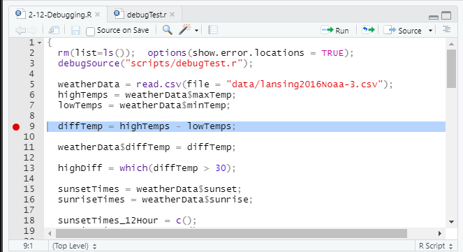
Breakpoint (red dot) set on line 9 -- the left of the line is called the gutter area
When you Source your code, the script will execute up to, but not including, the line with the breakpoint. Your script is now paused at the line with a breakpoint, and you are in debug mode, which R calls Browse mode.
Note: A breakpoint only works when you Source your script. It will not work if you use Run to execute lines of code.
There are 4 things in RStudio that will indicate you are in debug mode:
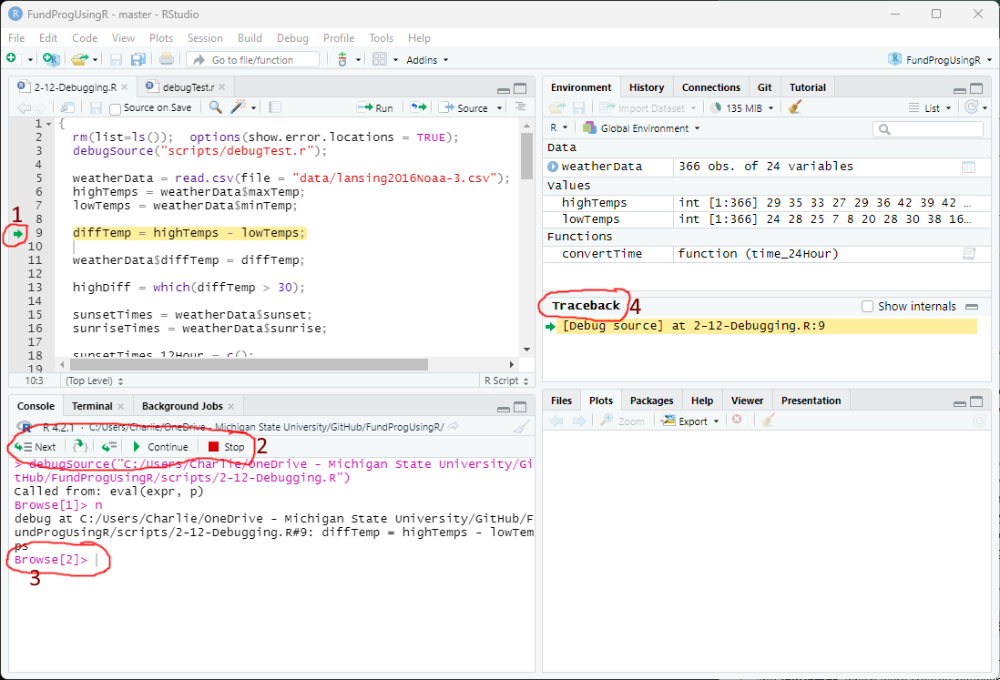
Sourcing a script with a breakpoint puts it into debug mode
In this lesson I will put instructions in angled brackets like this if you want to follow along with the script:
< Place a breakpoint at line 9 in the lesson's script and click Source >
diffTemp = highTemps - lowTemps;
In fig ##, the script is currently paused at line 9, this means lines 1-8 has been executed. In the Environment you can see weatherData, highTemps, and lowTemps, which were created between lines 1-8.
weatherData 366 obs. of 24 variables
highTemps int [1:366] 29 35 33 27 29...
lowTemps int [1:366] 24 28 25 7 8 20...
When in debug mode, you can enter commands in the Console. With these commands you can do things like view values in or execute functions on a vector:
Browse[2]> highTemp[1:20]
[1] 29 35 33 27 29 36 42 39 42 38 16 23 18 34 42 33 26 15 21 22
Browse[2]> max(highTemps)
[1] 94
You can also create a new variable that will be added to the Environment:
Browse[2]> highTemp_C = (5/9)*(highTemps-32)
Browse[2]>
highTemp_C num [1:366] -1.667 1.667 0.556 -2.778...
When you script arrives at a breakpoint (fig ##) , five controls appear in the Console tab:
1) Next: executes the command at the green arrow
2) Step In: moves into a function
3) Step Out: completes a for loop or function
4) Continue: unpauses the execution of the script (like hitting the Play button when a video is paused)
5) Stop: quits the script (no more code is executed)
Examples will be given for each in this lesson.
These buttons allow you to control the flow of you script. They are pretty universal -- you will see these same controls when you use breakpoints in other programming languages. When in debug mode you should only use the buttons to control the flow of your script. You should use the Run or Source buttons whole in debug mode -- they will cause problems.
The five breakpoint control in debug mode
Clicking Stop will take R out of debug mode and end the execution of the script. In other words, no more commands in the script will be executed and the four components of debug mode (fig ##) will go away.
There are situations where you need to click Stop multiple times to get out of debugger mode The most common reason is that Source was clicked while in debug mode. For example, if you click Source 5 times in debugger mode, then you will need to click Stop 5 extra times (6 in all) to escape debug mode.

Stopping debug mode -- sometimes Stop has to be hit more than once.
< In the lesson script, add a second breakpoint on line 18 (so, now we have breakpoints at lines 9 and 18) and click Source >
sunsetTimes_12Hour = c();
The script will pause at the first breakpoint (line 9). If you click Continue, the script will unpause and continue executing the until the next breakpoint is reached on line 18 and pause there (green arrow). Between the first and second pause, lines 9-17 are executed and the results are in the Environment.
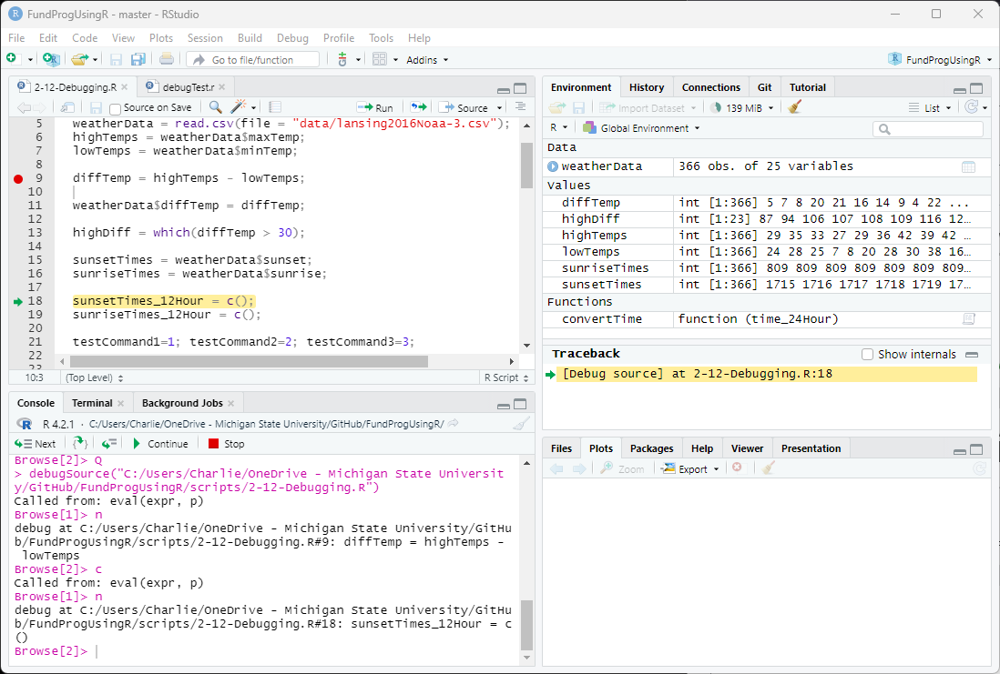
Continue takes the script to the next breakpoint (if there is another one)
Breakpoints added in debug mode will not work until the next time the script is Sourced. You will see an outlined red dot and a message about how breakpoints will not be active.

Adding a breakpoint on line 18 while in debug mode
If you remove a breakpoint in debug mode, the red dot will disappear but the breakpoint remains in effect until you exit debug mode.
After line 18 there are no more breakpoints, so if you click Continue again, the rest of the script will be executed and you will be taken out of debug mode.
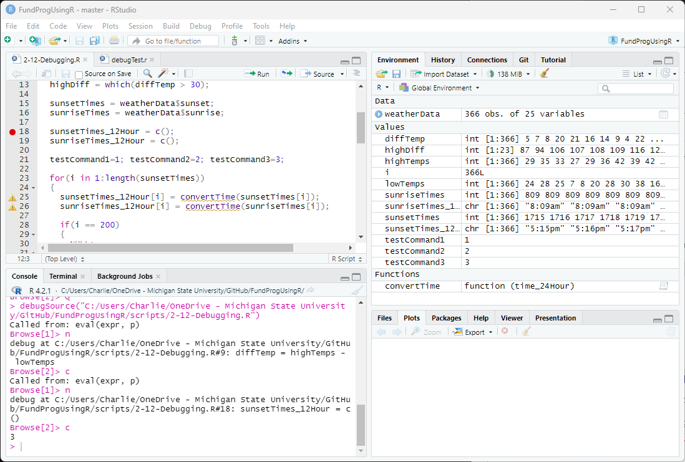
Clicking Continue when there are no more breakpoint executes the rest of the script
Remove the breakpoints at lines 9 and 18 and add a breakpoint at line 25 (inside the for loop)...
sunsetTimes_12Hour[i] = convertTime(sunsetTimes[i]);
If you put a breakpoint inside a for loop then Continue will stop at the breakpoint every cycle of the for loop.
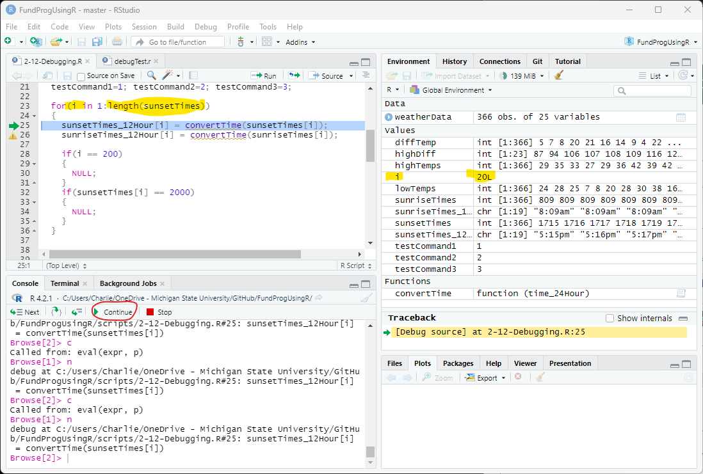
Continue clicked 20 times (note: i=20) with a breakpoint inside the for loop
Remove breakpoint on line 25 and put a breakpoint on line 15.
sunsetTimes = weatherData$sunset;
If we Source the script, the code up until line 14 will execute and line 15 will have a green arrow in the gutter.
We can now execute one command at a time using Next.
Clicking Next executes the command on line 15 and moves the green arrow to the next command on line 16.
So, sunset_times is created and put in the Environment and line 16, which creates sunriseTimes, is highlighted with the green arrow..
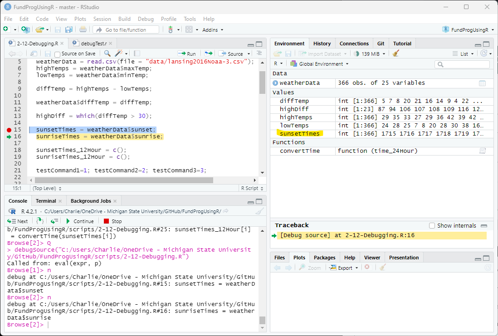
Clicking Next executes the command at the green arrow and moves the green arrow to the next command
Click Next until you get to line 21
Lines 15-19 have one command each but line 21 has three commands:
testCommand1=1; testCommand2=2; testCommand3=3;
Next does not execute lines, Next executes commands. If there are multiple commands on one line then Next will execute them one at a time.
When there are multiple commands on a line, the debugger in RStudio will highlight the current command.
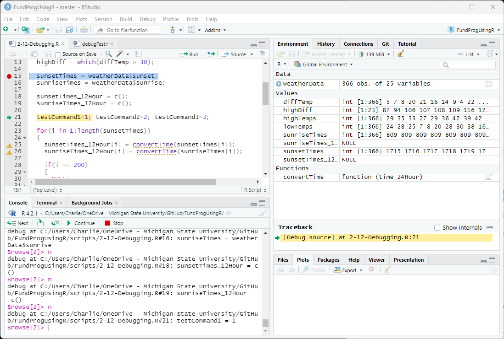
Only the current command is highlighted -- clicking Next moves through the commands on the line.
Click Next until you get to line 23
When the green arrow gets to a for loop, RStudio will highlight the whole for loop:
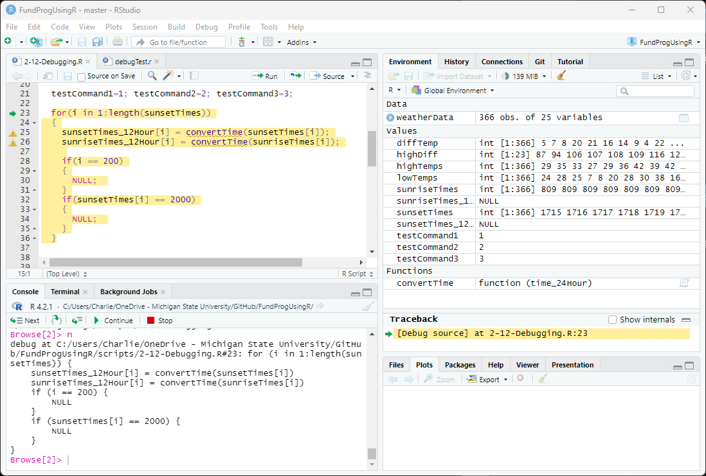
Highlighting the whole for loop in debug mode
Clicking Next executes the initialization command for the for loop:
for(i in 1:length(sunsetTimes))
In this initialization command:
The initialization command of a for loop only executes once whereas everything inside the for loop will executes once per cycle of the for loop.
After the initialization command is executed, Next will move the control inside the for loop:

After executing the initialization command, the green arrow moves inside the for loop
Continue to hit Next and debug mode will go through each command in the for loop for each cycle of the for loop
If you are inside a for loop and want to finish executing the whole for loop (i.e., complete every cycle of the loop), you can click Step Out. This will execute the rest of the for loop and put the control on the next command as long as you have no breakpoints in the for loop.
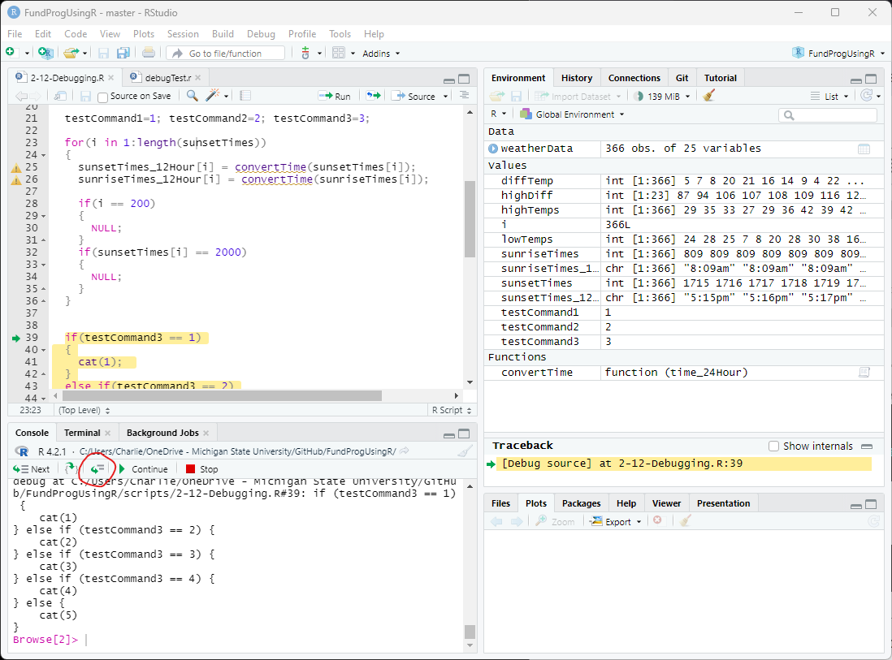
Clicking Step Out will execute the rest of the for loop and move control to the next command
Note: If you have a breakpoint inside the for loop then Step Out will just execute to the breakpoint -- similar to Continue (fig ##).
Stop script, put breakpoint on line 30, and Source script
A for loop can easily run thousands or millions of times and you often only want a breakpoint on specific cycles of the for loop. In most programming language, you can attach a condition to the breakpoint so that the breakpoint only activates when specified.
In R, you need to manually code this condition. You can pause at a specific cycle of the for loop using an if statement:
if(i == 200)
{
NULL; # this line functionally does nothing
}
The breakpoint needs to be put on the line inside the codeblock attached to the if statement. Inside the codeblock is a NULL command -- meaning it does nothing (it is only there to provide a space for the breakpoint).
With the breakpoint on line 30, the script will pause on the 200th cycle of the for loop:

Using an if statement as a conditional breakpoint inside a for loop
Or, if you put a a breakpoint at line 34, you can conditionally break on some other value being used in the for loop:
if(sunsetTimes[i] == 2000)
{
NULL;
}
The script will pause on the 141st cycle of the for loop, which represent the day that sunset is at 8:00pm (2000 hours)
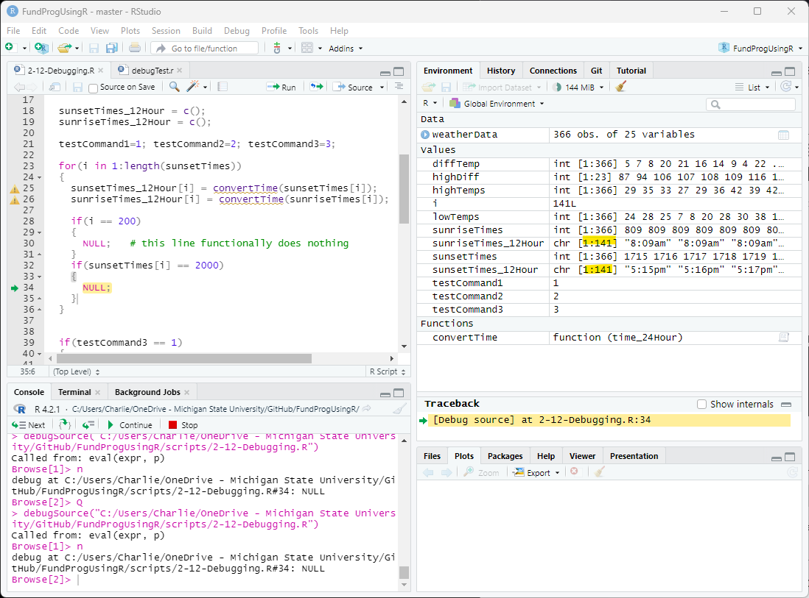
Conditional breakpoint based on a variable used in the for loop
Stop the script and put a breakpoint on line 39
Similar to for loops, the code inside the parentheses of if-else statements is a command. The command, which is a conditional statements, outputs a Boolean (TRUE/FALSE) value that is used to determined if the codeblock gets executed.
When you set a breakpoint at the if() line, the whole if-else is highlighted in RStudio when the code is stopped at the line.
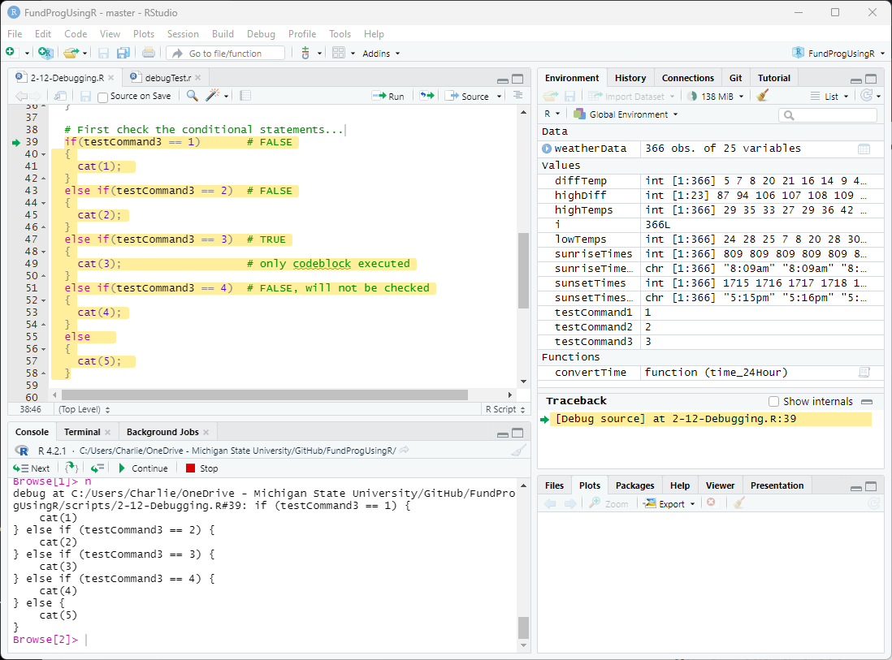
Debug mode when the control is at the beginning of an if-else structure
As you click Next, the control (green arrow) will either:
The following lines are not executed in an if-else structure so they will be skipped over in debug mode:
Inside the for loop on lines 25 and 26, we call convertTime twice. convertTime is a function inside the debugTest.R. If you click Next while on line 25, then the whole line is executed, along with the convertTime function, and control will go to the next line.
You can debug within the convertTime function by clicking Step-In while on the lines with the function -- this will move control to the function and the whole function will be highlighted:
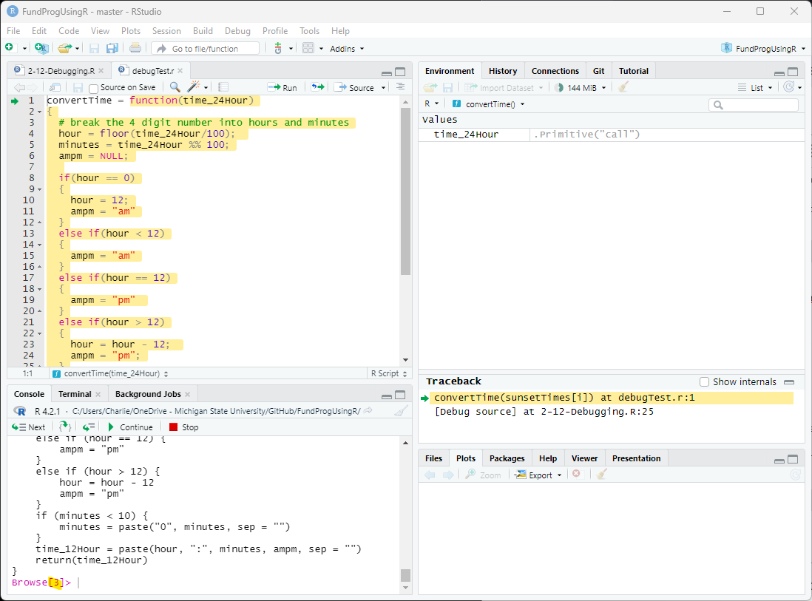
After clicking Step-In on line 25, control is moved to the function
Step-in works whether the function is inside the same script or in another script. However, Step-in will not work if the function is inside a package.
Note: the Browse number increase by 1 (from 2 to 3). The Browse number of sort of a measurement of how many levels deep you are in code.
Once inside the function you can use the debug buttons like before. Next will execute one command at a time inside the function. If you want to complete the whole function and return to the main script, you can click Step Out (similar to for loops).
The function convertTime exists is a script separate from the main script. When we want to make use of other script files in our main script, we call the script file using source(). In this case:
source("scripts/debugTest.r");
However, source() ignores the breakpoints added to the script. If you want to execute breakpoints within the script then you need to call the script with debugSource():
debugSource("scripts/debugTest.r");
Now, you can put breakpoints inside debugTest.r
The difference between the two is that source() ignores breakpoints -- this makes source() more efficient and faster than debugSource(). If speed is important for your code then you want to switch debugSource() back to source() after you have completed debugging your script.
Note: this is not typical behavior in other programming languages -- most other languages assumes all scripts are in debug mode if you have added breakpoints to any script being executed.
Ironically, there are many bugs that occur while you are in debug mode.
R can sometimes get into a weird state when you have put multiple breakpoints in. For instance this error
Error in fBody[[i]] : no such index at level 5 <show image>
- green arrow not showing up
When that happens go through these steps in order to fix the problem:
Save the lesson script file as app2-13.r
Why might it be a bad idea to put breakpoint without a condition inside a for loop?
What happens when you put a breakpoint on a line with no code?
What happens if you put a breakpoint at line 45? How bout line 44? How about 51?
Set up a conditional breakpoint within a for loop that pauses the script every 30th cycle
Set up a conditional breakpoint within a for loop to pause the code when winds are greater than 40mph
Put a breakpoint at line 40. What are the next 6 command that will be executed.
GGPlot at end of script...
Answer the following in comments inside your application script:
This section will provide examples for the many different bugs when using breakpoints in RStudio
Breakpoints are, unfortunately, not well implemented in R/RStudio. Here are a couple of the issue:
So, a breakpoint will not work on this line:
if(highTemps[i] > 50)
{
# put a breakpoint on the line below
cat("highTemp greater than 50"); # but... this comment breaks the breakpoint
}
But will work if you take out the breakpoint
So, a breakpoint will not work on this line:
if(highTemps[i] > 50)
{
# put a breakpoint on the line below (now it will work)
cat("highTemp greater than 50");
}